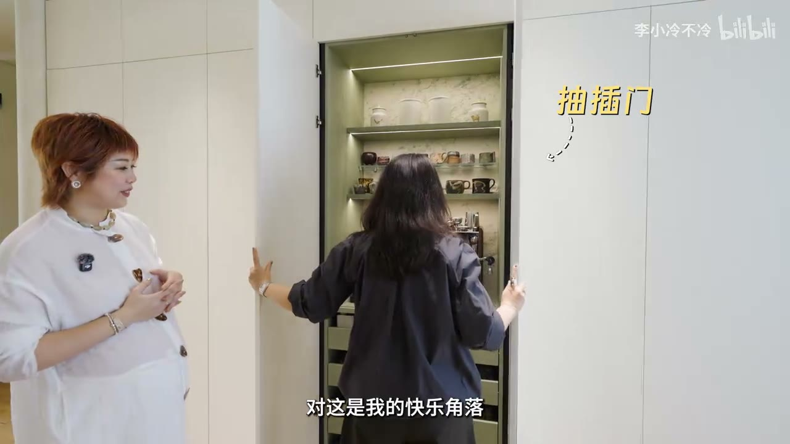

原视频 · 在线回看
点击后联网加载 B 站播放器；本地不下载整段视频。

原视频 · 在线回看
点击后联网加载 B 站播放器；本地不下载整段视频。
来源：看完她家，「去客厅化」瞬间不香了！
UP 主：李小冷不冷
时长：11 分 36 秒
链接：https://www.bilibili.com/video/BV1yCLb6hE4b/
阅读强度：standard
“去客厅化”常被理解成少放一套沙发电视，把面积交给其他用途。这个家的选择走了另一条路：保留开阔的公共空间，让它同时容纳喝茶、朋友聚会、孩子写作业和一家人各自放松。屋主在装修中反复回答的，是每样东西放在哪里、每天怎么取用，以及家里人怎样自然地待在一起。
进门后最醒目的收纳墙集中放了咖啡豆、咖啡器具、蜡烛和收藏器物，常用物品放在顺手的位置。墙边的储物柜还收纳生活囤货和孩子写作业的用品；因为孩子常在餐桌附近做题，作业物品也安排在附近，减少来回找取。屋主整理后才发现自己存了许多杯子和器物，于是把收藏与日用收纳放进同一面墙，让展示和拿取都顺着使用习惯发生。
厨房的安排也围绕动作展开。操作台旁的小电器柜可以把门完全打开，柜体做了内退，避免挡住通道；煮饭时还留出蒸汽散开的空间。调味篮可以轻触升起，常用调料不用弯腰翻找。她强调储物不能只追求柜子更深：柜体太深、过道变窄，拿东西反而不方便，增加的容量也可能用不上。
客厅朝向公共区域设置一张大岛台，家人做饭时能和朋友说话，来客也可以围在这里活动。台面由不同工种分别制作框架和面板，屋主把石材部分作为可以控制预算的项目。视频里提到的大理石部分约两百元，但没有说清材料面积、加工和安装是否都计入，因此只能当作这个项目里的局部报价。
屋主一家常喝茶，便把茶桌做成一个可操作的日常站点。她没有把茶盘固定嵌在桌面里，担心茶渣和积水清理麻烦；改为在旁边设置带盖板的隐形水槽，并接上进水、洗杯器和收纳茶具的小柜。盖板盖上时，桌面可以继续使用；泡茶时揭开，倒水、冲杯与收拾在一个范围内完成。她也把常用茶叶、小杯子放在可拉出的收纳格里。
这样的布置服务于一家人的习惯，也给来访的朋友提供了自然停留的地方：有人泡茶，有人坐在旁边看书。屋主加了一张小书桌，设想周末可以一起阅读；天花的圆形开孔则兼顾音响、空调和空间造型。空间功能因此连在一起，喝茶、交谈和阅读都能发生在同一处公共区域。
家里还保留屋主捏制的陶器、收藏的艺术品，以及一张退役的冲浪板。冲浪板是丈夫送的礼物，装修时重新处理后作为装饰继续留在家里。屋主把这些物品和个人经历联系起来，说明收纳也可以为生活记忆留出位置，不必每样东西都只按“是否还在使用”来判断去留。丈夫另有一个带小门洞的角落，收纳旧药柜、老家具和个人用品；孩子也有一间可以活动、制作手工作品的房间，屋主允许它保持相对随意。
考虑到家里将迎来第二个孩子，主卧放了一张三米宽的组合床：现阶段可以让一家四口同睡，之后能拆成单人床和双人床，搬去儿童房继续使用。衣帽间里则给丈夫的脏衣和待干洗衣物安排了固定篮子，让“随手放下”仍有归处；裤子可以直接挂起，袜子和运动内衣分格摆放，找衣服时能直接看到款式。
孩子房间的衣柜按孩子身高安排，衣物放在他能够自己拿取的位置。等孩子长大、能独立睡觉后，再把床搬进已经预留好衣柜的房间。现在开放式布局让公共区域保持宽敞明亮，也给家庭成员留出不同的角落；未来再通过移床和调整家具适应孩子成长。
这套房子的核心，是把公共空间安排成能持续使用的地方：桌面既是操作台，也是聚会和喝茶的位置；收纳靠近日常动作；孩子、伴侣与屋主各有自己的活动角落；大件家具则考虑之后能否搬动复用。
这些做法来自一个空间宽裕、常邀请朋友来家里、重视喝茶与收藏的家庭。视频没有提供完整平面尺寸、柜体结构、施工图或各项工程总价，适合拿来观察“生活习惯如何变成空间安排”，不能直接当成普通户型的装修清单。